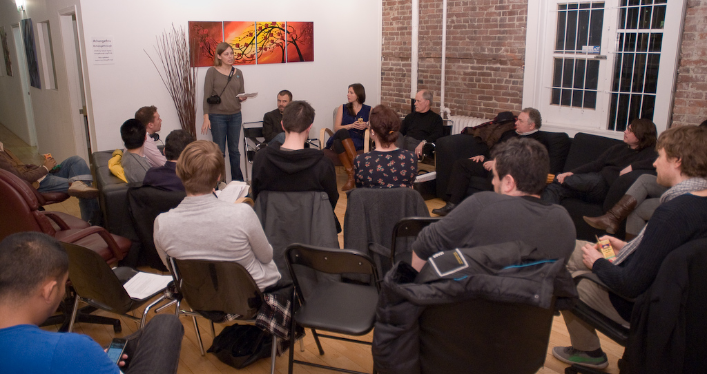

Change Through Public Space
Introduction
Public space is defined as a social area that is free and accessible to all, regardless of gender, ethnicity, age, or socio-economic level. How do we as citizens interact with public space? More importantly, how can we use public space as a vehicle for positive social change?
On February 10, 2011, we invited three speakers to share their perspectives on change through public space. Their thoughts provided us with ample material to explore, dissect, and challenge ourselves to find new and different ways to engage with our community.
Speakers
Gordon Price — Director, The City Program at SFU
Gordon Price is a city planner and the Director of the City Program at Simon Fraser University. He was a Vancouver city councillor from 1986 to 2002, and has also served as a Board member of the Greater Vancouver Regional District. He spoke about how urban planning both shapes and is shaped by a city's culture and residents.
“There is one particular public space in this city that has been so profound in shaping us and that, in my mind, is by far in a separate category on it's own for the importance of public space in Vancouver; and that is the seawall.”
Samantha Jo Simmonds — Creative Director, Public Dreams
Samantha Jo Simmonds is an artist, filmmaker, and the Creative Director of Public Dreams, Vancouver's nonprofit public art organization. Public Dreams produces events with the goal of engaging and enhancing the community through art. Samantha Jo asked us to think about how interactive and participatory events create vital and healthy neighbourhoods.
“I'm getting at the difference between using public space for passive consumption — that is, spectatorship — and participation in public spaces… What is that thing that happens when people make a lantern, or put on a costume, or get involved with what's happening and are part of the message of the community they are trying to create?”
John Richardson — Founder, Pivot Legal Society
John Richardson is a lawyer and founder of Pivot Legal Society. Pivot's mandate is to use the law to give equality and a voice to those who are most marginalized. John believes that public spaces are fundamental places for drawing attention to the root causes of poverty and social exclusion.
“Without public space, these [social and economic] problems would be pushed aside and ignored, and the pressure to solve these problems would be much reduced. So as well as an important vehicle for people to have meaningful expression or a meaningful way of meeting their needs, it's an important way of expressing need for political change.”
Conversations
“There was lots to discuss and debate – everything from bike lanes to advertising in public space, to crime prevention design, to the notion of ownership, “turf” and more.”
“Meet up starting now on how 2 achieve #changethru public space @changethrough Look no further than Egypt”
“Public spaces do shape society/culture and people shape public places. Interesting views at 1st meetup.”
Wrap

What will you do with public spaces now?
We'd like to thank our speakers for taking the time and effort to explore our theme. They provided insightful and provocative discussion that helped us understand issues around public space more clearly and frame the rest of the evening.
We'd also like to thank the NetworkHub for their venue, support, and participation in Change Through.